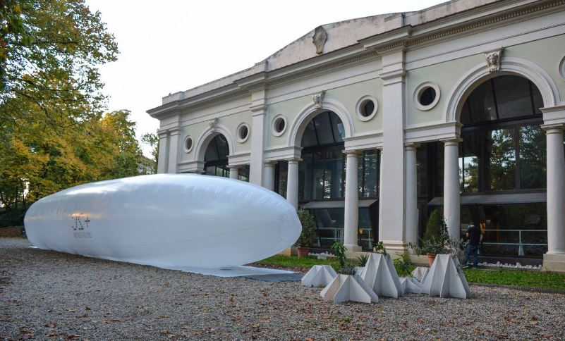

Pneumatic Architecture

Project information
- Category: Workshop
- Client: Legambiente Firenze
- Project date: October 2016
Design and construction of a pneumatic architecture based on the idea of Analogique for the cultural event Firenze 2030+2C. Exhibition of the structure sponsored by Legambiente to raise public awareness on climate change and global warming, in fact people could walk into the baloon and experience an increase of temperature by two degrees from the outside, which is the change expected for the year 2030.